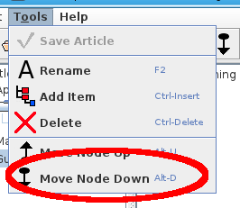
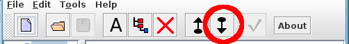

There are several ways to delete a node.
| Tools menu, move node down |  |
| Move down toolbar option |  |
As with the "Move selected Node Up" option, there are some rules to this command. The node will only move the node down if the parent node stays the same as the selected node. If you want the node to be moved to a different location, see "cut and paste" for more information.